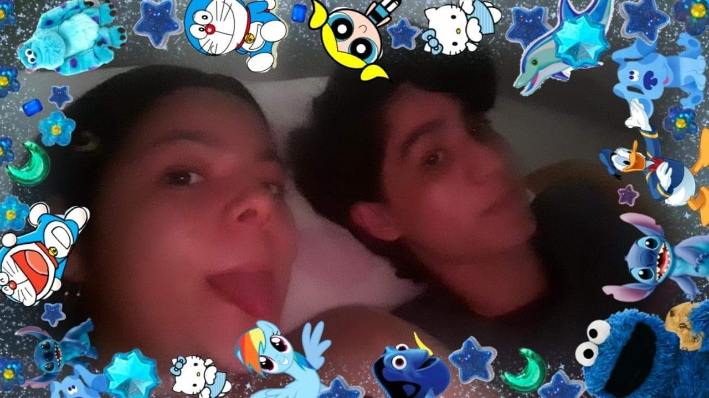

|
|
 |
|---|
Nuestros lindos e inocentes inicios
Es íncreible como de la nada, alguien pueda convertirse en LITERALMENTE tu todo, y aunque suene muy cliché, es totalmente lo que me pasó al menos a mi contigo
y me alegro demasiado de que haya sido así, porque wow, en serio que me quedo corto tratando de describir cuan perfecta eres, no hay papel ni tinta suficiente para definir cada uno de
tus rasgos y cualidades y cada una de las cosas que te hace la mujer más increible del mundo, y todo esto es básicamente lo que he pensado desde que te he conocido.
Pasar dias enteros hablando contigo y conociendote se había vuelto una de mis actividades preferidas, ya que aunque apenas nos conociamos, siempre me sentía a gusto hablando contigo
poder contarnos cosas incluso un poco intimas pero siempre era fascinante hablar contigo ya que no nos habíamos visto nunca en persona, y así fue hasta que empezaste a venir a mi casa y pasabamos tardes y un poquito de las noches solo acostados en mi cama
hablando o solo tu quedandote dormida mientras me abrazabas, y claro, de nunca olvidar la primera vez que nos vimos en persona y como notoriamente los nervios se apoderaron totalmente de mi, pero la razón de ello tenía nombre y apellido, eras tu y tu belleza,
solo eso pudo volverme un manojo de nervios el cual solo respondía a las cosas que decias. Mi unico pensamiento era "Dios mio, en serio se puede ser así de hermosa?. Es que no me lo creo" y básicamente cada segundo que pasaba no podia evitar sentirme mas atraido
a ti y a esa forma tan linda de hablar y contar las cosas, y como contabas que querias en esos dias hacer piña colada y necesitabas leche de coco. Simplemente perfecta.
¿En serio quieres que sea tu novio?
18 de agosto de 2020, voy a tu casa a estar contigo y vemos una pelicula con tu mama y despues de un rato me dices que nos tomemos fotos y nos tomamos muchas, se hace mas tarde, vuelvo a mi casa y cuando te escribo
me respondes casi media hora despues solo enviandome un lindo video y un poco peculiar, cosa que yo no sabía que harias sin embargo es una de las mejores que me has podido dar ya que fue la forma en que me pedias que
fuera tu novio, cosa que era la primera vez que hacias por alguien y tambien cosa que alguien hacia primera vez por mi.
Logicamente te dije que si, luego de haber estado casi otra media hora en shock asimilando si todo era cierto mientras me salian unas lagrimas de felicidad y repetia una y otra vez el video, y asi empezamos ser oficialmente novios y es un
poco gracioso teniendo en cuenta que primero nos casamos antes de ser novios. Esa propuesta que me hiciste ha sido la mejor cosa en la que he podido tomar una decisión, no me arrepiento ni tan si quiera un solo segundo de
haberte dicho que si, eras, eres y serás siempre mi mayor amor por encima de cualquier cosa.